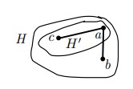

Билет 12
Стягивание ребра в двусвязном графе без потери двусвязности.
Определение
Двусвязный граф — это связный граф, в котором удаление любой вершины (с её инцидентными рёбрами) не нарушает связность. Стягивание ребра — операция над графом, при которой два конца ребра 𝑢𝑣 сливаются в одну вершину, а все рёбра, инцидентные 𝑢 и 𝑣, переназначаются на новую вершину (повторы рёбер исключаются).
Теорема 8
Пусть G — двусвязный граф, v(G) ≥ 4, a ∈ V(G). Тогда существует такое ребро ab ∈ E(G), что граф G · ab двусвязен.
Доказательство (от противного)
Утверждение Для любого ребра ax ∈ E(G) множество {a, x} — разделяющее в графе G.
- Тогда граф G · ax имеет точку сочленения — скажем, w.
- Если w = a · x, то граф G − {a, x} = G · ax − a · x несвязен, что нам и нужно.
- Пусть w a · x. Тогда пусть A — компонента связности G − w, содержащая вершину a · x, а B — другая компонента G − w.
- Пусть A′ = (A \ a · x) ∪ {a, x}). Тогда в графе G − w нет пути из A′ в B, что противоречит двусвязности G.
- Рассмотрим все графы вида G − {a, x}, где ax ∈ E(G) и все их компоненты связности.
- Выберем из них минимальную компоненту H. Пусть ab ∈ E(G), а H — компонента графа G − {a, b}.
- По Лемме 5, существует вершина c ∈ H, смежная с a. Тогда по Утверждению граф G − {a, c} несвязен.
- Пусть ,..., — все отличные от H компоненты G − {a, b}.
- Так как по Лемме 5 в каждой компоненте есть вершина, смежная с b, множество ∪ {b} связано в графе G − {a, c}, то есть, лежит в одной компоненте связности W этого графа.
- Следовательно, любая другая компонента H′ графа G − {a, c} — подмножество H \ {c}, противоречие с минимальностью H. 